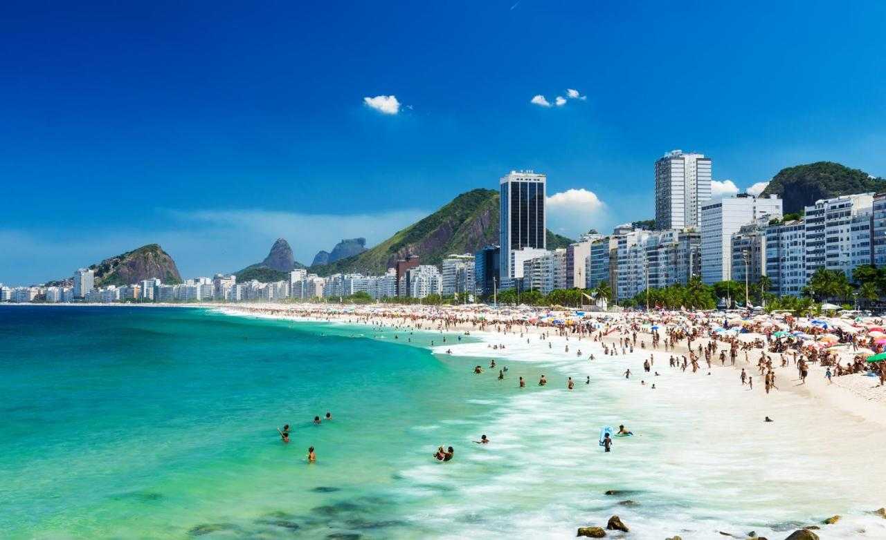
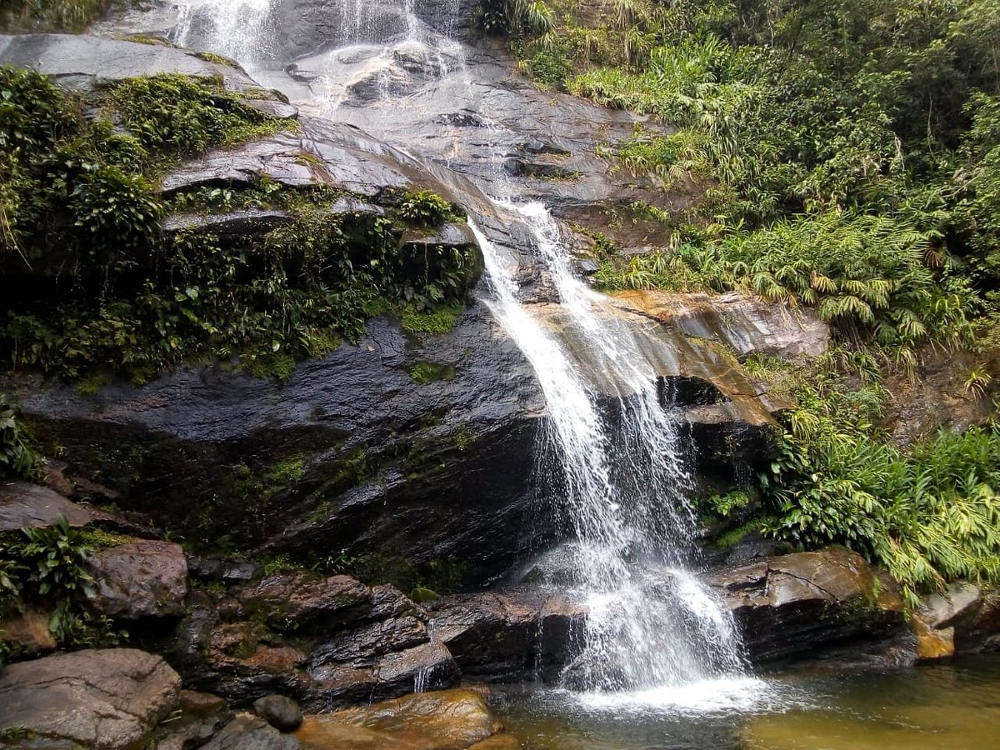
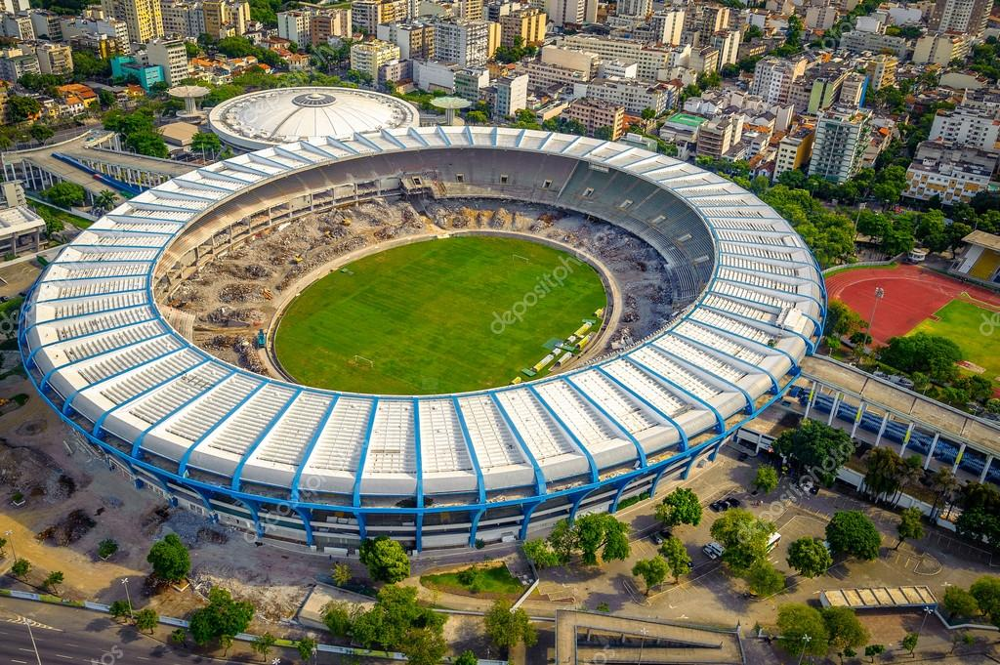

welcome to Rio de Janeiro!
This is Rio de Janeiro
Known to Brazilians as "Cidade Maravilhosa" (The Wonderful City), Rio de Janeiro is always brimming with color, sound, rhythm, and joy, which make it synonymous with Carnival, happiness, and beautiful people. Very few places in the world match the hospitality and natural charm in which Rio is perpetually swathed. It is the second largest city in Brazil, on the South Atlantic coast; famous for its breathtaking landscape, its laid back beach culture and its annual carnival. Although, their soccer skills here are very well recognized. Rio de Janeiro is well known for the beauty of its beaches and of its peaks, ridges, and hills—all partly covered by tropical forests. The city is a centre of leisure for Brazilian and foreign tourists, and people wearing bathing suits can be seen walking in the streets and along the beaches or traveling on the city's buses. Perhaps at no time is the city's festive reputation better displayed than during the annual pre-Lenten Carnival, which enlivens the city night and day with music, singing, parties, balls, and street parades of brilliantly costumed dancers performing to samba rhythms. It is also an important economic centre, however, with activities ranging from industry and national and international trade to administration, banking, education, culture, and research.
Copacabana Beach
Copacabana, often referred to as the world's most famous beach, it is mostly know for holding the annual festival known as "Reveillon", which is celebrated at the last day of the year, where a countdown happens to celebrate the New Year.
Tijuca Forest
Tijuca Forest is located in the heart of Rio de Janeiro. The access is possible from North, South and West zone of the City. The forest is the biggest urban forest in the world, with an extension of almost 4.000 hectare of Atlantic Forest.
Maracana stadium
Few iconic stadiums in the world can rightly claim to be genuinely historical monuments as well as sporting arenas. It is popularly known as Estadio Mario Filho, with its enormous expanse, colossal seating capacity, and majestic architecture, is one of them.